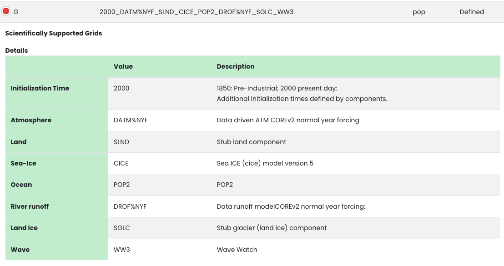

CICE
Contents
CICE#
The sea ice component of CESM is CICE. This is developed by the CICE Consortium. Note that CESM2 uses CICE version 5. In version 6 of CICE, the vertical thermodynamics was separated into a submodule known as Icepack. CICE6 will be the sea ice component in CESM3.
It can be useful for people interested in sea ice science to run simulations with only active sea ice and ocean components and atmospheric forcing. In this exercise, you will learn how to run one of these ice-ocean simulations.
This exercise was created by David Bailey and Alice DuVivier.
Learning Goals#
Student will learn what a G compset is, the types of forcing available to run one, and how to run one.
Student will learn how to make a namelist modification that changes snow albedo and compare results with a control experiment.
Student will learn how to make a source code modification that changes the conductivity through snow (ksno) and compare results with a control experiment.
Exercise Details#
This exercise uses the same code base as the rest of the tutorial.
You will be using the G compset at the T62_g37 resolution.
You will run a control simulation and two experimental simulations. Each simulation will be run for one year.
You will use simple, command line netcdf tools to evaluate how the experiments differ from the control simulation.
Useful CICE references#
What is a G case?#
The G compset has active and coupled ocean and sea-ice components. The G compset requires boundary forcing from the atmosphere. The G compset is forced with atmospheric data that does not change interactively as the ocean and sea-ice evolve in time. The land and land ice are not active during a G compset experiment run and the runoff is specified.

Figure: G compset definition.
G Compset forcing data#
There are two types of temporal forcing for G compsets:
Normal Year Forcing (NYF) is 12 months of atmospheric data (like a climatology) that repeats every year. NYF is the default forcing.
Interannual varying forcing (GIAF) is forcing that varies by year over the time period (1948-2017).
There are two datasets that can be used for G compsets:
JRA55-do atmospheric data (Tsujino et al. 2018)
Coordinated Ocean-ice Reference Experiments (CORE) version 2 atmospheric data (Large and Yeager 2009).
In these exercises we will use the CORE NYF.
Post processing and viewing your output#
You will use ncview and NCO operator tools to evaluate how the experiments differ from the control simulation.
These tools will need to be loaded into your environment using the NCAR HPC modules.
module load ncview
module load nco
You can create an annual average of the first year’s data for each simulationg using the
ncra(netCDF averager) command from the netCDF operators package (NCO).
ncra $OUTPUT_DIR/*.cice.h.*nc $CASENAME.cice.h.0001.nc
Create a file that contains differences between each of the experiments and the control simulation
ncdiff $CASENAME.cice.h.0001.nc $CONTROLCASE.cice.h.0001.nc $CASENAME_diff.nc
Examine variables within each annual mean and the difference files using
ncview
ncview $CASENAME_diff.nc
You can also look at other monthly-mean outputs or component log files.